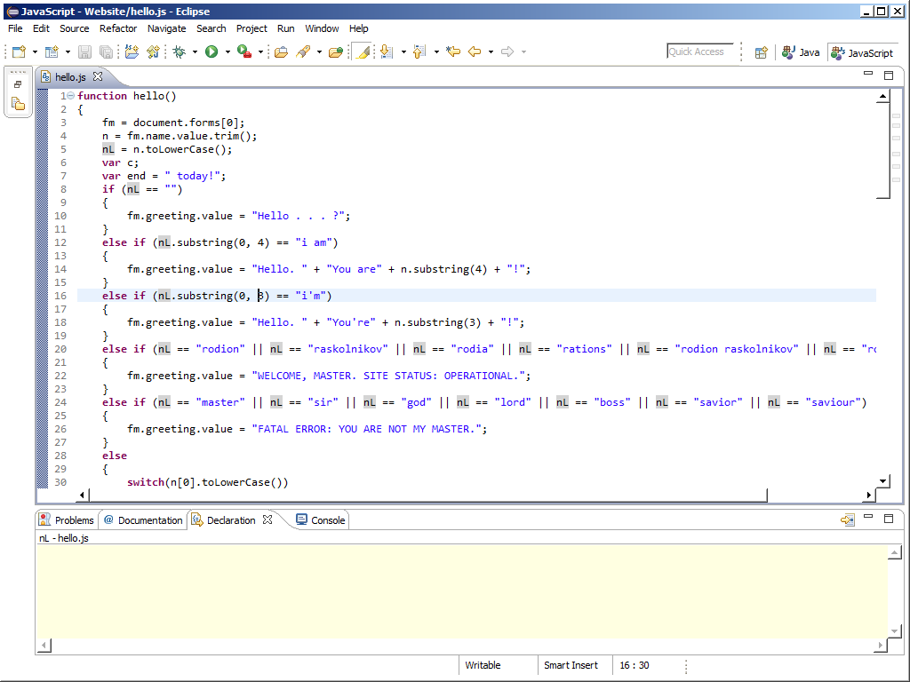

I had no experience with coding-based web design before I began building this website. I had taken one year of AP Computer Science, but that was the extent of my coding training.
I learned the basics of HTML, CSS, and JavaScript from Codecademy, though knowing some Java from AP CS helped with the lattermost. Codecademy's lessons often feel too training-wheels-y, but its interactive user interface is very helpful for learning . . . and pretty, too! I have mixed feelings about the repetitiveness of the lesson exercises: practice is crucial, but I feel like learners' time would be better spent on coding independent projects and figuring things out along the way.
In fact, it's remarkable how much you can accomplish with only a bit of coding knowledge. Once you understand the basic syntax, you can experiment with website building, troubleshooting problems using online resources; chances are that someone else has run into your problems before. Stack Exchange is a great place to start.
The pages on this site were all coded from the ground up using HTML. I started with Notepad++, but quickly learned of Sublime Text from my adviser, Matthew Kelly. The developers of the latter have truly found an aesthetically appealing color scheme!

Math expressions are possible thanks to MathJax, a free JavaScript engine that renders LaTeX-like text for web pages. While it can't do everything LaTeX can (especially when it comes to packages), it requires no installation, uses syntax almost identical to that of LaTeX, and can be edited directly in an HTML document).
Almost all the images on this website were created by me in InkScape, a free SVG graphics application.
The user interface appears a bit daunting, and I won't pretend the know how to navigate around the nauances the developers have included, but once you invest a modest amount of time in reading the tutorials, experimenting with the tools, and troubleshooting problems online, I think you'll find InkScape very rewarding and gratifying (especially the snap handles—ooh!).
At the time of writing, Wondergrad has relatively few "fancy" things. The input-output calculators are lightweight JavaScript scripts artistically styled using basic CSS. Lately, I have been streamlining the user interface by adding jQuery code.
Much of such code is simple enough that it is more convenient for me to write it directly in Sublime Text. For more complicated scripts, however, I prefer using Eclipse, which has more error-recognition and development tools than most humble undergrads can hope to become fluent in.
In the works are D3 animations, among other more interesting things.